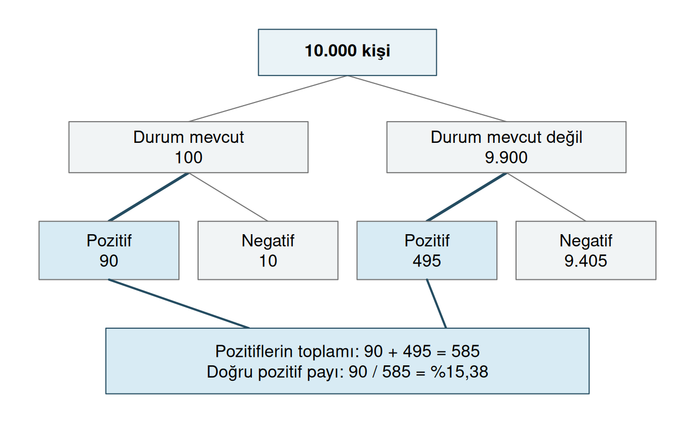
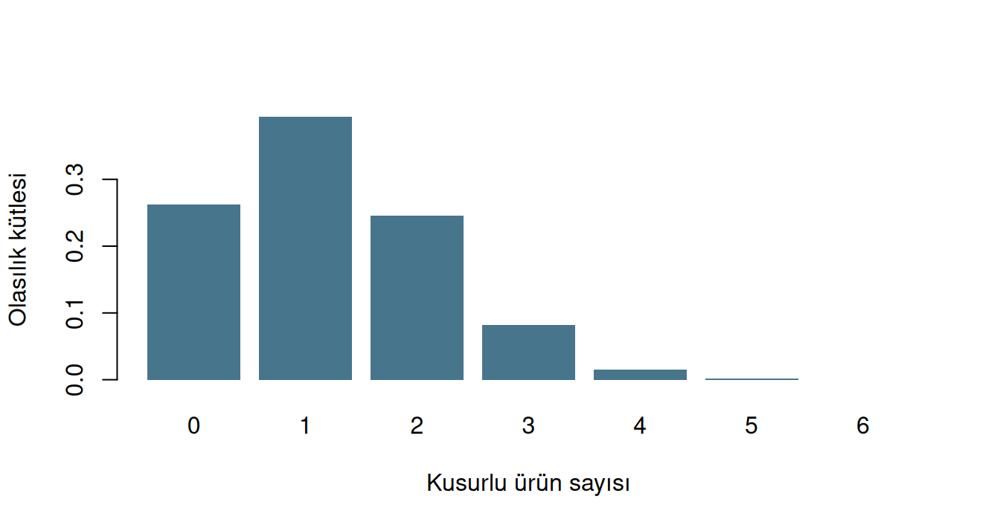
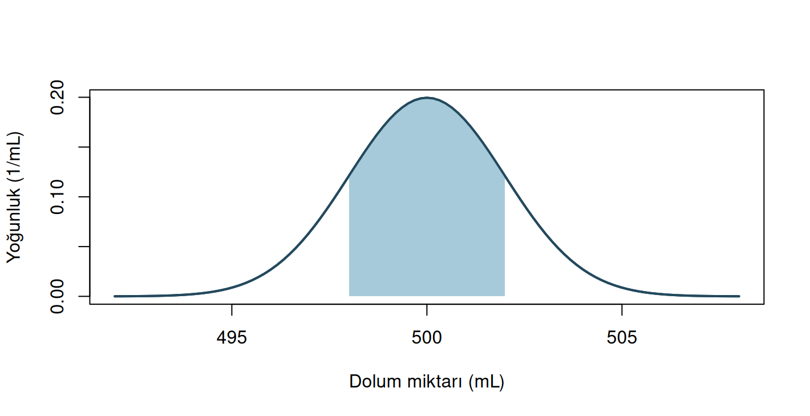

“Yarın yağmur olasılığı %70.” Bu cümle, günün %70’inde mi yağmur yağacağını söylüyor? Bölgenin %70’ini mi anlatıyor? Cevap, tahminde neyin bir yağış olayı sayıldığına, yere ve zaman aralığına bağlıdır. Örneğin bir modelin belirli bir noktada yarın 06.00–18.00 arasında en az 1 mm yağış düşmesi olayına %70 olasılık verdiğini varsayalım. Buradaki sayı, bu tanımlı olayın gerçekleşmesine ilişkin tahmindir. Olay gerçekleşse bile yağışın ne kadar süreceğini veya bölgeye nasıl yayılacağını öğrenmiş olmayız. Ölçüm eşiği, konum ve saatler bu ders örneğine aittir.
Bir olayın olasılığı 0 ile 1 arasında ifade edilir. %70, ondalık gösterimde 0,70’tir. Sayının gücü, dayanağıyla birlikte anlaşılır. Bir üretim hattında aynı süreç altında tekrarlanan kontrollerin uzun dönem kusur oranından söz edebiliriz. Ertesi günün yağışı gibi tek bir olay içinse elimizdeki ölçümler ve model ışığında değerlendirme yaparız. Bir matematiksel model, hangi sonuçlara ne kadar olasılık verileceğini tutarlı biçimde belirler. Bu seçim eşit olasılık varsayımına, gözlemlere veya mevcut bilgiyi özetleyen başka varsayımlara dayanabilir.
Tek bir gün, %70’lik bir tahminin kalitesini ölçmek için yeterli değildir. Yağmur yağarsa da yağmazsa da modelin izin verdiği bir sonuç gerçekleşmiştir. Aynı tanımla %70 tahmin verilen çok sayıda durumda olay yaklaşık %70 sıklıkla gerçekleşiyorsa, o düzeydeki tahminler kalibre görünür. Bu değerlendirme, tahminleri ortak bir olay tanımı ve karşılaştırılabilir bir kapsam içinde biriktirmeyi gerektirir.
Bölüm 29 bölümünde verinin hangi süreçten geldiğini sorguladık. Bölüm 30 bölümünde gerçekleşmiş gözlemleri özetledik. Şimdi gerçekleşebilecek sonuçlar için bir model kuracağız. Bölüm sonunda koşullu olasılığı yorumlayabilecek, sayım ve sürekli ölçüm modellerini gerekçeleriyle seçebilecek, hesapladığınız olasılığı R benzetimiyle karşılaştırabileceksiniz. Oran, temel toplam işareti ve R vektör işlemleri başlangıç için yeterlidir. İntegrali bir eğrinin altında biriken alan olarak kullanacağız.
31.2 Rastgele deney, örneklem uzayı ve olaylar
Bir depoda kontrol edilen ürünler için iki özellik kaydedilsin. Ambalaj hasarlı olabilir ve etiket hatalı olabilir. Bir ürünü önceden belirlenen bir kuralla seçip bu iki özelliği kaydetmek bir rastgele deney tanımlar. Deneyin tek bir gerçekleşmesinde elde edilen kayıt bir sonuçtur. Olası sonuçların tümü örneklem uzayı\(\Omega\)’yı oluşturur. Bu örnekte dört sonuç vardır: iki özelliğin de bulunmaması, yalnızca hasar, yalnızca etiket hatası ve ikisinin birlikte görülmesi. Dört sonuç olması bunların eşit olasılıklı olduğunu göstermez.
\(A\) hasarlı ambalaj olayını, \(B\) hatalı etiket olayını göstersin. Bir olay, sonuçların bir kümesidir. \(A\cup B\), en az bir sorunun görüldüğü birleşimdir ve iki sorunun birlikte görülmesini de kapsar. \(A\cap B\), iki sorunun birlikte görülmesi olan kesişimdir. \(A^c\), \(A\)’nın tümleyenidir ve ambalaj hasarının bulunmadığı sonuçları kapsar. \(\varnothing\), hiçbir sonuç içermeyen boş kümedir. Kesişimleri boş olan olaylar birbirini dışlar. Örneğin “yalnız ambalaj hasarı” ve “yalnız etiket hatası” aynı üründe gerçekleşemez.
Olasılık atamalarının birbiriyle tutarlı olmasını üç temel kural sağlar. Her \(A\) olayı için \(P(A)\geq0\) olmalıdır. Tüm örneklem uzayının olasılığı \(P(\Omega)=1\)’dir. Son olarak birbirini dışlayan olayların birleşiminin olasılığı, olasılıklarının toplamıdır. Bu son aksiyom sayılabilir bir olay dizisi için de geçerlidir. \(A_j\) birbirini dışlayan olayları ve \(j\) olay numarasını gösterirse:
Bir olay ile tümleyeni birbirini dışlar ve birlikte bütün uzayı kapsar. Bu yüzden \(P(A)+P(A^c)=1\), dolayısıyla \(P(A^c)=1-P(A)\) olur. \(A\) ile \(B\) örtüşüyorsa olasılıklarını topladığımızda kesişime iki kez yer veririz. Birini çıkarınca genel toplama kuralı elde edilir (Diez vd. 2019):
Örneğin 100 üründen 20’sinde ambalaj hasarı, 10’unda etiket hatası ve 4’ünde iki sorun birlikte görülmüş olsun. Bu 100 üründen birini eşit olasılıkla seçersek en az bir kusur görme olasılığı \((20+10-4)/100=0{,}26\), hiçbirini görmeme olasılığı 0,74’tür. Bu hesap, söz konusu 100 ürün içindeki rastgele seçimi tanımlar. Gelecekteki üretimin kusur oranını tahmin etmek için hangi ürünlerin denetlendiğini ve sürecin değişip değişmediğini de bilmek gerekir.
31.3 Koşullu olasılık ve bağımsızlık
Bir olay hakkında yeni bilgi öğrendiğimizde neden olasılık değerlendirmemiz değişir? Örneğin seçilen ürünün etiketinin hatalı olduğu söylensin. Artık 100 ürünü eşit biçimde düşünmeyiz. Etiketi hatalı 10 ürün arasında seçim yapılmış olduğunu biliriz. Bunların dördünde ambalaj hasarı vardır. Yeni payda 10’dur ve hasarın koşullu olasılığı \(4/10=0{,}40\) olur. Oysa etiket hakkında bilgi gelmeden önce bu olasılık \(20/100=0{,}20\) idi.
Genel olarak \(P(A\mid B)\), \(B\) gerçekleştiği bilindiğinde \(A\)’nın olasılığıdır. \(B\)’yi geçici örneklem uzayı gibi kullanırız. \(A\)’nın bu uzay içinde kalan kısmı \(A\cap B\)’dir. Toplam olasılığı \(P(B)\) olan bu yeni uzayın ölçeğini 1’e getirmek için \(P(B)>0\) koşuluyla bu parçayı \(P(B)\)’ye böleriz:
\[
P(A\mid B)=\frac{P(A\cap B)}{P(B)}.
\]
Her iki tarafı \(P(B)\) ile çarpınca çarpım kuralı elde edilir. İki olayın birlikte görülme olasılığı, önce \(B\)’nin gerçekleşme olasılığı ile sonra bu koşulda \(A\)’nın gerçekleşme olasılığının çarpımıdır:
\[
P(A\cap B)=P(B)P(A\mid B).
\]
Bir olay hakkında bilgi edinmek ötekinin olasılığını değiştirmiyorsa ve ilgili koşulun olasılığı pozitifse, örneğin \(P(A\mid B)=P(A)\) ise olaylar bağımsızdır. Sıfır olasılıklı olayları da kapsayan genel tanım \(P(A\cap B)=P(A)P(B)\) eşitliğidir. Ürün örneğinde kesişim 0,04 iken çarpım \(0{,}20\times0{,}10=0{,}02\)’dir. Bu 100 üründen yapılan seçim modelinde olaylar bağımsız değildir.
Birbirini dışlama, birlikte gerçekleşmenin imkânsız olmasıdır. Bağımsızlık ise bir olayın diğerine ilişkin olasılık bilgisini değiştirmemesiyle ilgilidir. İki olay da pozitif olasılığa sahipse, birbirini dışlamaları bağımsızlığı engeller. Örneğin tek bir ürün “yalnız hasarlı” ise “yalnız etiket hatalı” olma olasılığı sıfıra iner. Bir sonraki örnekte, koşulun yönünü karıştırmanın sonucu nasıl değiştirdiğini göreceğiz.
31.4 Bayes teoremi ve tarama sonucu
Tamamen varsayımsal bir taramayı düşünelim. İncelenen durumun yaygınlığı %1, testin duyarlılığı %90, özgüllüğü %95 olsun. Duyarlılık, durum mevcutken pozitif sonuç verme olasılığıdır. Özgüllük, durum mevcut değilken negatif sonuç verme olasılığıdır. Pozitif sonuç alanların ne kadarında durumun var olduğu ise ayrı bir sorudur. Aşağıdaki sayılar gerçek bir teste ait değildir. Sonuçlar öğretim için beklenen sayı olarak verilmiştir.
10.000 kişilik bir toplulukta durumun 100 kişide mevcut olmasını bekleriz. Bu kişilerin 90’ı pozitif sonuç alır. Durumun bulunmadığı 9.900 kişinin %5’i, yani 495’i de pozitif sonuç alır. Böylece beklenen 585 pozitif sonucun yalnızca 90’ı durumun mevcut olduğu kişilerden gelir. Nadir bir durum söz konusu olduğunda yanlış pozitiflerin oranı düşük olsa bile bu oran çok geniş bir gruba uygulanır. Koşullu olasılığın yönünü karıştırıp %90 cevabını vermek, yaygınlığı ve bu grubun büyüklüğünü gözden kaçırır.
Bu örnek için \(A\) durumun mevcut olması, \(B\) pozitif test sonucudur. Birleşik olayın olasılığını çarpım kuralıyla iki yönde yazalım. \(P(A\cap B)\) hem \(P(A)P(B\mid A)\) hem de \(P(B)P(A\mid B)\)’ye eşittir. \(P(B)>0\) olduğunda ikinci ifadeyi \(P(A\mid B)\) için çözersek Bayes teoremi ortaya çıkar:
\[
P(A\mid B)=\frac{P(B\mid A)P(A)}{P(B)}.
\]
Pozitif sonuçlar birbirini dışlayan iki yoldan gelir. Durum mevcuttur ve test pozitiftir ya da durum mevcut değildir ve test pozitiftir. Bu iki yolun olasılıklarını toplamak toplam olasılık kuralının bu örnekteki biçimidir:
Test sonucu bilinmeden önceki \(P(A)\)önsel olasılıktır. Pozitif sonucu sabit tutup varsayılan duruma göre \(P(B\mid A)\) ve \(P(B\mid A^c)\) değerlerine baktığımızda, bunlar pozitif verinin iki durum altındaki olabilirlikleridir. Durumu bilinmeyen pozitif bir kişi için \(P(A\mid B)\)sonrasal olasılıktır. Bu bağlamda buna pozitif öngörü değeri denir. Duyarlılık \(P(B\mid A)\), özgüllük \(P(B^c\mid A^c)\), yanlış pozitif oranı ise özgüllüğün tümleyeni \(P(B\mid A^c)\)’dir (Diez vd. 2019).
toplam <-10000yayginlik <-0.01duyarlilik <-0.90ozgulluk <-0.95mevcut <- toplam * yayginlikyok <- toplam - mevcutdogru_pozitif <- mevcut * duyarlilikyanlis_pozitif <- yok * (1- ozgulluk)knitr::kable(data.frame(durum =c("Mevcut", "Mevcut değil", "Toplam"),pozitif =c(dogru_pozitif, yanlis_pozitif, dogru_pozitif + yanlis_pozitif),negatif =c(mevcut - dogru_pozitif, yok - yanlis_pozitif, toplam - dogru_pozitif - yanlis_pozitif)), col.names =c("Durum", "Pozitif", "Negatif"))
İki hesap da yaklaşık 0,154 verir. Pozitif sonuç alanların yaklaşık %15,4’ünde durumun mevcut olması, bu varsayımlar altındaki model sonucudur. Aynı test özellikleri korunup yaygınlık değişirse pozitif sonuçların hangi gruplardan geldiği ve dolayısıyla öngörü değeri de değişir.

Şekil 31.1: Varsayımsal 10.000 kişilik taramada beklenen doğal frekanslar. Kalın dallar pozitif sonuçları, alttaki kutu pozitif öngörü değerinin paydasını gösterir.
Şekil 31.1 üzerinde 90 ve 495 pozitif sonuç, farklı ana dallardan aynı kutuya geliyor. Pozitif sonuç verildikten sonra yeni payda iki pozitif dalın toplamı olan 585’tir. Duyarlılığı hesaplarken ise yalnız durumun mevcut olduğu dalın 100 kişisini payda alırız.
31.5 Rassal değişken ve olasılık dağılımı
Lojistik merkezi, gönderileri “kusurlu” ve “kusursuz” olarak kaydediyor olsun. Üç gönderinin kontrol sonuçlarının sırası kimi sorular için değerlidir. Ancak ayrılması gereken gönderi sayısını planlarken yalnızca toplam kusurlu sayısı yeterlidir. Her olası kontrol sonucunu bu sayıyla eşleyen kurala rassal değişken deriz. \(X\) bu kuralı, küçük \(x\) ise alabileceği belirli bir değeri gösterir. \(X=2\) olayı, üç kontrolden tam ikisinin kusurlu olduğu bütün sonuçları kapsar.
Kusurlu gönderi sayısı 0, 1, 2 veya 3 olabilir. \(X\) burada kesiklidir. Her değerin olasılığını veren \(p_X(x)=P(X=x)\) kuralı olasılık kütle fonksiyonudur (probability mass function). Kütleler negatif olamaz ve olası değerlerdeki toplamları 1’dir. Bir sürenin ideal bir ölçümünü modelliyorsak aralık boyunca her gerçek sayı mümkün olabilir. Böyle bir ölçümü sürekli bir modelle temsil ettiğimizde \(f(x)\), olasılık yoğunluk fonksiyonunun (probability density function) \(x\)’teki değeridir. Olasılık, bir aralık üzerindeki yoğunluk alanıdır:
\[
P(a\leq X\leq b)=\int_a^b f(x)\,dx.
\]
\(a\) ve \(b\) aralığın alt ve üst sınırıdır. \(dx\) integrali \(x\) boyunca aldığımızı gösterir. Toplam alan 1’dir. Yoğunluğun birimi ölçüm biriminin tersidir. Süre dakika cinsindense yükseklik dakika başına yoğunluktur. Eğri yüksekliği 1’i aşabilir. Alan yine 0 ile 1 arasında kalır. Yoğunlukla tanımlanan sürekli modelde tek noktanın genişliği sıfır olduğundan \(P(X=x)=0\)’dır. Bir termometrenin aynı yuvarlanmış değeri tekrar göstermesi buna aykırı değildir. Yuvarlanmış kayıt, alttaki değerlerin bir aralığını temsil eder. Bölüm 23 bölümündeki yoğunluk grafiği bu alan fikrinin gözlenen veriye dayalı bir karşılığıdır.
Her iki model türünde de “bir eşiği aşmama” sorusuna birikimli dağılım fonksiyonu (cumulative distribution function) yanıt verir. \(F(x)=P(X\leq x)\), \(x\) eşiğine kadar biriken olasılıktır. Kesikli dağılımda \(F\), olası değerlerde kütle kadar sıçrar. Yoğunluğu olan sürekli dağılımda soldan eşik değerine kadar biriken alanı verir. Örneğin \(P(a<X\leq b)=F(b)-F(a)\) iki eşik arasında eklenen olasılıktır. Bu yazımda alt uç dışarıda kalır. Kesikli durumda orada bir kütle varsa dışarıda bırakılması önemlidir.
31.6 Beklenen değer ve varyans
Bölüm 30 bölümünde ortalamayı gözlenen değerlerin eşit veya belirlenmiş ağırlıklarla hesabı olarak gördük. Modelde ağırlıkları olasılıklar belirler. Beklenen değer, olası sonuçların bu ağırlıklarla hesaplanan ortalamasıdır. Bir süreci çok kez aynı koşullarda yürütmeye ilişkin uzun dönem ortalama fikrini taşır. Bir günde gözlenen ortalama ise o günün gerçekleşen ölçümlerinden hesaplanır.
Kesikli dağılımda \(E(X)\), \(X\)’in beklenen değeridir. Toplam, \(X\)’in alabileceği bütün \(x\) değerleri üzerindedir. Yoğunluğu olan sürekli dağılımda küçük aralıkların olasılığını yoğunluk ile aralık genişliğinin çarpımı gibi düşünürüz. Aralıkları incelttikçe ağırlıklı toplam integrale dönüşür:
İlk satır kesikli, ikinci satır sürekli model içindir. \(-\infty\) ve \(\infty\), bütün gerçek değer aralığını gösterir. Yoğunluk bu aralığın bir kısmında sıfır olabilir. Örneğin bir vardiyada yeniden işlem gerektiren iş sayısı 0, 1 veya 2 ve olasılıkları sırasıyla 0,5, 0,3, 0,2 ise beklenen değeri \(0\times0{,}5+1\times0{,}3+2\times0{,}2=0{,}7\) olarak buluruz. Tek vardiyada 0,7 iş görülmez. Yaklaşık on benzer vardiya için toplam yedi işlik bir beklenen yük söz konusudur.
Varyans, modelin ortalaması çevresindeki kareli uzaklıkların beklenen değeridir. \(m=E(X)\) yazalım. Kareyi açınca \(X^2-2mX+m^2\) elde edilir. Beklenen değer toplam boyunca ayrışır ve sabitler aynen kalır. Orta terimin beklentisi \(-2mE(X)=-2m^2\) olduğundan:
Son ifadede \(E(X^2)\), başlangıçta değerlerin karelerini alıp ağırlıklandırır. \([E(X)]^2\) ise önce ortalamayı hesaplayıp sonra karesini alır. Vardiya örneğinde \(E(X^2)=0{,}3+4\times0{,}2=1{,}1\), varyans \(1{,}1-0{,}7^2=0{,}61\) iş sayısı karesidir. Standart sapma karekök alınarak yeniden iş sayısı birimine döner. Bu hesapta \(n-1\) böleni yoktur. Burada örnek veriden varyans tahmin etmek yerine modelin bilinen ağırlıklarını kullanıyoruz.
Bu hesapların sonlu olması bir koşuldur. Beklenen değerin sonlu tanımlanması için \(E(|X|)<\infty\), sonlu varyans için \(E(X^2)<\infty\) yeterlidir ve sonlu varyans ikinci momentin sonlu olmasını gerektirir. Bazı ağır kuyruklu modellerde bu koşullar sağlanmaz. Bu bölümdeki Bernoulli, binom, Poisson ve normal modeller için iki koşul da sağlanır.
Sonlu beklenen değerleri olan \(X\) ve \(Y\) için \(E(X+Y)=E(X)+E(Y)\) olur. Bağımsızlık gerekmez. Örneğin iki vardiya birbirini etkilese bile beklenen toplam iş sayısı iki beklenen değerin toplamıdır. Sabit \(a\) ve \(b\) için \(E(a+bX)=a+bE(X)\) ve \(\operatorname{Var}(a+bX)=b^2\operatorname{Var}(X)\) olur. Sabit kayma, değeri ve merkezini aynı miktarda kaydırır. Ölçek çarpanı ise sapmayı \(b\), kareli sapmayı \(b^2\) katına çıkarır. Bağımsız ve sonlu varyanslı \(X\) ve \(Y\) için \(\operatorname{Var}(X+Y)=\operatorname{Var}(X)+\operatorname{Var}(Y)\). Kare açıldığında iki merkezlenmiş değişkenin çarpımının beklenen değeri, bağımsızlık sayesinde sıfırdır. İki vardiyanın yükleri birlikte artıp azalıyorsa bu çarpımın etkisi göz ardı edilemez.
31.7 Kesikli olasılık dağılımları
31.7.1 Bernoulli ve binom
Tek bir kontrolde “kusur var” sonucunu 1, “kusur yok” sonucunu 0 olarak kodlayalım. Olasılığı \(p\) olan sonuca başarı denir. Bu terim sonucun istenen bir olay olduğunu ima etmez. \(0\leq p\leq1\) için \(P(X=1)=p\), \(P(X=0)=1-p\) ve başka değerlerde kütle sıfırdır. Bu Bernoulli dağılımıdır. Beklenen değer \(p\)’dir. 0 ve 1’in kareleri kendileri olduğundan \(E(X^2)=p\), dolayısıyla \(\operatorname{Var}(X)=p(1-p)\). Sonuç neredeyse kesin olduğunda yayılım küçüktür. En büyük yayılım iki sonuç eşit olasılıklı olduğunda ortaya çıkar.
Şimdi aynı kusur olasılığına sahip ve birbirinden bağımsız \(n\) kontrol yapalım. \(X\), bu kontrollerdeki toplam kusur sayısı olsun. Tam \(k\) kusura ait belirli bir sıranın olasılığı, bağımsızlık nedeniyle \(p^k(1-p)^{n-k}\)’dir. Örneğin üç denemede iki kusur, ilk iki konumda veya birinci ve üçüncü ya da son iki konumda olabilir. Bu üç farklı sıra birbirini dışlar. Genel olarak \(\binom{n}{k}\), \(n\) konum arasından \(k\) konumu sıralamadan seçmenin sayısıdır. \(0<p<1\) ve \(k=0,1,\ldots,n\) için:
\[
P(X=k)=\binom{n}{k}p^k(1-p)^{n-k}.
\]
Bu binom dağılımıdır. \(p=0\) veya \(p=1\) uçlarında sayı sırasıyla kesin olarak 0 veya \(n\) olur. Binom katsayısı olmasaydı yalnızca tek bir kontrol sırasının olasılığını bulurduk. \(X\), \(n\) Bernoulli değişkeninin toplamı olduğundan \(E(X)=np\), bağımsızlık nedeniyle \(\operatorname{Var}(X)=np(1-p)\)’dir. Bir partiden yerine koymadan önemli sayıda ürün çekiliyorsa, önceki seçimler sıradaki kusur olasılığını değiştirebilir. Ortak makine arızaları da sonuçları birbirine bağlayabilir. Kontrol sayısının sabit olması, tek başına binom modelini gerekçelendirmez (Diez vd. 2019).
k <-0:6binom_kutle <-dbinom(k, size =6, prob =0.20)barplot(binom_kutle, names.arg = k,xlab ="Kusurlu ürün sayısı", ylab ="Olasılık kütlesi",col ="#47758B", border =NA)

Şekil 31.2: Altı bağımsız kontrolde kusur olasılığı 0,20 ise kusurlu ürün sayısının binom kütleleri. Çubuk yüksekliği tek bir sayının olasılığıdır.
Şekil 31.2 üzerinde 0 ile 6 arasındaki her değer ayrı bir olasılık taşır. Tam iki kusurun kütlesi yaklaşık 0,246’dır. En az bir kusurun olasılığı, sıfır kusurun olasılığını 1’den çıkararak yaklaşık 0,738 bulunur. Bu olay için 1 ile 6 arasındaki bütün çubukların yüksekliklerini toplamak da aynı sonucu verir.
31.7.2 Poisson
Bir çağrı merkezinde belirli bir 10 dakikalık aralıkta kaç çağrı gelebileceğini düşünelim. Önceden sabit bir müşteri denemesi saymak yerine, bir süre içinde biriken olayları sayarız. Model, çağrıların yaklaşık sabit bir hızla ve birbirini tetiklemeden geldiğini varsayabilir. Eşit sürelerin ortalama yükü benzerse, ayrık aralıklardaki olay sayıları bağımsızsa ve çok kısa bir aralıkta aynı anda birden çok olay görülme olasılığı ihmal edilebiliyorsa Poisson dağılımı bir başlangıç modeli olabilir.
\(X\) aralıktaki çağrı sayısı, \(\lambda>0\) bu aralıkta beklenen çağrı sayısı, \(k\) ise negatif olmayan tam sayı olsun. Kütle fonksiyonu şöyledir:
\[
P(X=k)=e^{-\lambda}\frac{\lambda^k}{k!}.
\]
\(e\) doğal üstel fonksiyonun tabanıdır. \(k!\), 1’den \(k\)’ya çarpımdır ve \(0!=1\)’dir. Aralığı çok sayıda kısa parçaya ayırıp her birinde az olasılıkla bir çağrı olduğunu düşünmek, binomla bir bağ kurar. Parça sayısı büyüyüp parça başına olasılık küçülürken beklenen toplam \(\lambda\) sabit tutulduğunda Poisson kütlesine yaklaşılır. Aynı limitte binom varyansındaki \(1-p\) çarpanı 1’e yaklaşır. Poisson modelinde \(E(X)=\operatorname{Var}(X)=\lambda\) bulunması bu ilişkiyle uyumludur (Diez vd. 2019).
10 dakikada ortalama üç çağrı bekleniyorsa \(\lambda=3\) kullanılır. Hız aynı kaldığı sürece 20 dakika için 6 kullanılır. Aşağıdaki iki hesap, tam beş çağrı ile en az beş çağrı arasındaki farkı gösterir:
Tam beş çağrının olasılığı yaklaşık %10,1, en az beş çağrının olasılığı %18,5’tir. Çağrıların reklam sonrası kümelenmesi veya sabah ile akşam hızlarının değişmesi bu modeli zayıflatır. Heterojen dönemleri aynı \(\lambda\) ile birleştirmek ya da çağrıların birbirine bağlı olması, sayımların varyansının ortalamasından büyük olduğu aşırı yayılıma yol açabilir. Sonlu bir veri grubunda ortalama ve varyansın tam eşit olması beklenmez. Kalıcı bir fark, model uygunluğunu araştırmak için işarettir.
31.8 Sürekli dağılımlar ve normal dağılım
Bir dolum makinesinin şişelere verdiği sıvı miktarını düşünelim. Makine hedefe yakın çalışıyor ve küçük sapmalar iki yöne dağılabiliyorsa, ölçümü yaklaşık modellemek için simetrik bir yoğunluk düşünülebilir. Normal dağılım böyle bir modeldir. \(X\sim N(\mu,\sigma^2)\) gösteriminde \(\sim\) dağılımı izlemek anlamındadır. \(N\) normal dağılımı, \(\mu\) konumu ve beklenen değeri, \(\sigma>0\) standart sapmayı, \(\sigma^2\) varyansı belirtir. Dağılım \(\mu\) çevresinde simetriktir. \(\sigma\) büyüdüğünde eğri genişler ve toplam alan 1 kaldığı için tepe alçalır.
Normal modelin yoğunluğu, gerçek sayı doğrusundaki bir \(x\) değeri için şöyle yazılır:
Burada \(\sigma>0\), \(\pi\) çember sabiti ve \(\exp\) doğal üstel fonksiyondur. Üstelin içindeki kare, merkezden aynı uzaklıktaki iki değerin aynı yoğunluğa sahip olmasını sağlar. Merkezde üstelin girdisi sıfırdır ve üstel terim 1 olur. Merkezden uzaklaştıkça girdi daha negatif olur ve eğri alçalır. \(\sigma\), merkezden uzaklığın hangi ölçeğe göre büyük veya küçük sayılacağını belirler.
Öndeki \(1/(\sigma\sqrt{2\pi})\) çarpanı eğrinin yüksekliğini ayarlar. Merkezlenmiş standart ölçekte normal eğrinin ölçeklenmemiş alanı \(\sqrt{2\pi}\) değerindedir. Yatay ölçeği \(\sigma\) ile genişletmek alanı da \(\sigma\) ile çarpar. Bu yüzden toplam alanı 1 yapmak için yükseklik, bu iki çarpanın çarpımına bölünür. Tepe yüksekliği de bu katsayıdır. Bir noktanın olasılığı içinse yüksekliği tek başına kullanamayız.
Bir miktarın hedefe göre kaç standart sapma yukarıda veya aşağıda olduğunu bilmek, mililitre cinsinden farkı başka süreçlerle karşılaştırmaya yardım eder. Bunun için ölçümden merkezi çıkarıp farkı standart sapmaya böleriz:
\[
Z=\frac{X-\mu}{\sigma}.
\]
\(Z\) birimsiz standartlaştırılmış değişkendir. Örneğin \(X=504\) mL, \(\mu=500\) mL ve \(\sigma=2\) mL ise \(Z=2\)’dir. Beklenen değer ve ölçekleme kuralları \(E(Z)=0\), \(\operatorname{Var}(Z)=1\) verir. Doğrusal dönüşüm normal dağılım biçimini koruduğundan, \(X\) normalse \(Z\sim N(0,1)\) olur. Buna standart normal dağılım denir. Başka bir dağılımı aynı şekilde merkezleyip ölçeklemek ilk iki momenti değiştirir, biçimini normal yapmaz.
Normal modelde ortalamanın bir, iki ve üç standart sapma çevresinde kalan olasılıklar yaklaşık %68,3, %95,4 ve %99,7’dir. Bu oranlar, standart normal eğrinin sırasıyla \([-1,1]\), \([-2,2]\) ve \([-3,3]\) aralıklarındaki alanlarıdır. Başka bir simetrik dağılım bile farklı alanlara sahip olabilir. Ölçümlerin keskin sınırları, birden fazla kümelenmesi veya belirgin çarpıklığı varsa normal model özellikle kuyruklarda hatalı tahmin verebilir. Normallik değerlendirmesi gerçek sürece ve sorulan aralığa dayanmalıdır (Diez vd. 2019).
mu <-500sigma <-2curve(dnorm(x, mean = mu, sd = sigma), from =492, to =508,xlab ="Dolum miktarı (mL)", ylab ="Yoğunluk (1/mL)",col ="#23495D", lwd =2)bant <-seq(498, 502, length.out =200)polygon(c(bant[1], bant, tail(bant, 1)),c(0, dnorm(bant, mu, sigma), 0),col ="#A7CADA", border =NA)curve(dnorm(x, mean = mu, sd = sigma), add =TRUE,col ="#23495D", lwd =2)

Şekil 31.3: 500 mL ortalamalı ve 2 mL standart sapmalı normal model. 498–502 mL aralığının olasılığı taralı alandır.
Şekil 31.3 üzerindeki yükselti, 500 mL civarında değerlerin hangi yoğunlukta toplandığını gösterir. Örneğin 498–502 mL olasılığı, eğrinin bu aralıkta biriken alanıdır. Şekil 31.2 üzerindeki bir çubuğun yüksekliği ise doğrudan tek bir sayının olasılığıydı. Aynı görsel sezgiyi iki farklı modelde uygularken bu ayrımı korumak gerekir.
31.9 R ile olasılık hesaplama ve simülasyon
Dolum hattı için önce “502 mL’yi aşmayan dolumların oranı nedir?” diye soralım. Bu, birikimli dağılımın 502’deki değeridir. R’de p önekli fonksiyonlar bu soruya yanıt verir. Bir aralığın olasılığını bulmak için iki birikimli değeri çıkarabiliriz. Kesikli sayımda pbinom(2, ...), tam iki kusuru da dahil eder. “İkiden az” için 1’e kadar biriken olasılığı alırız.
Bazen soruyu tersinden sorarız. “Dolumların %95’inin altında kalacağı eşik nedir?” sorusu olasılık düzeyini verir ve değeri arar. R’de q öneki bunu hesaplar. Kesikli dağılımda q, birikimli olasılığı istenen düzeye en az ulaştıran en küçük destek değerini döndürür. Olasılık basamaklı olduğu için eşik tam %95’e denk gelmeyebilir. Bu ayrım, Bölüm 30 bölümündeki gözlem kantili ile burada modelden hesaplanan eşik arasındaki bağı da açıklar.
Bir değerin kütlesini veya yoğunluk yüksekliğini isteyen d önekli çağrılar, model türüne göre farklı sonuçlar verir. dbinom(2, ...) tam iki kusurun olasılığı, dnorm(500, ...) 500 mL’deki yoğunluktur. \(X\)’in tam 500 mL olması için normal modelde nokta olasılığı sıfırdır. R’nin normal fonksiyonlarında sd argümanına varyans yerine standart sapma verilir.
Dolumların yaklaşık %84’ü 502 mL’yi aşmaz. %95 eşiği yaklaşık 503,29 mL’dir. Bu bir model kantilidir. Dolum ortalaması için bir güven aralığı veya makineye ilişkin bir garanti vermez.
r önekli fonksiyonlar modelden yapay gözlemler üretir. Aşağıda her modelden 50.000 bağımsız tekrar üretiyoruz. Bir binom tekrarı, altı bağımsız kontrolün kusur sayısıdır. Bir normal tekrar, tek bir şişenin yapay dolumudur. Sabit tohum hesabın yeniden yapılmasını sağlar. Teorik olasılığı, koşulu sağlayan tekrarların oranıyla karşılaştıralım.
set.seed(53)tekrar <-50000kusur <-rbinom(tekrar, size =6, prob =0.20)dolum <-rnorm(tekrar, mean = mu, sd = sigma)knitr::kable(data.frame(olay =c("En az bir kusur", "498–502 mL dolum"),teorik =c(1-dbinom(0, 6, 0.20),pnorm(502, mu, sigma) -pnorm(498, mu, sigma)),benzetim =c(mean(kusur >=1),mean(dolum >=498& dolum <=502))), digits =4)
olay
teorik
benzetim
En az bir kusur
0.7379
0.7394
498–502 mL dolum
0.6827
0.6839
Oranların yakın çıkması, benzetimde hesapladığımız olayın teorik hesapla uyumlu olduğunu gösterir. Monte Carlo farkı sonlu sayıda yapay tekrar kullanmaktan doğar. Daha fazla tekrar genellikle bu dalgalanmayı azaltır. Ancak model yanlışsa benzetim de aynı yanlış varsayımları taşır. Örneğin gerçek dolumlar gün boyunca değişen iki farklı ayardan geliyorsa, tek normal dağılımdan daha çok çizim yapmak modelin bu eksiğini gidermez. Bir sonraki bölümde bu yaklaşımı tek ölçüm yerine, tekrarlanan örneklerden hesaplanan istatistiklere uygulayacağız.
31.10 Egzersizler
Kolay. Bir uygulama “yarın yağış olasılığı %70” diyor. Bu ifadenin yorumlanabilmesi için hangi üç bilgiyi istersiniz? Tek bir kuru gün tahminin kötü olduğunu gösterir mi?
Kolay. Yüz üründe 20 ambalaj hasarı, 10 etiket hatası ve dört ortak kusur var. Eşit olasılıklı seçimde hiçbir kusur olmama olasılığını ve etiket hatası biliniyorken ambalaj hasarı olasılığını bulun.
Orta. Aynı ürünün “yalnız ambalajı hasarlı” ve “yalnız etiketi hatalı” olaylarını açıklayın. Bu iki olayın bağımsız olup olmadığını gerekçelendirin.
Orta. Tarama örneğinde yaygınlık %1 yerine %10 olsun. Duyarlılık ve özgüllük aynıysa 10.000 kişide kaç doğru ve yanlış pozitif beklenir? Pozitif öngörü değerini günlük dille açıklayın.
Orta. İki vardiyanın her birindeki yeniden işlem sayısının beklenen değeri 0,7 ve varyansı 0,61. Vardiyalar bağımsızsa toplamın beklenen değeri ve varyansı nedir? Bağımsızlık bilinmezse hangi sonucu koruyabilirsiniz?
Orta. Yirmi sabit denemede aynı olasılıkla kusur görülmesi ile bir saatte gelen servis taleplerini karşılaştırın. Her problem için bir model ve onu zayıflatabilecek bir veri üretim özelliği önerin.
Zor.\(X\sim N(500,2^2)\) modelinde 496–504 mL aralığının olasılığını standartlaştırma yoluyla bulun. Bu olasılığı dnorm(500, 500, 2) çıktısıyla karşılaştırmanın neden uygun olmadığını açıklayın.
Zor. Altı bağımsız kontrolde kusur olasılığı 0,20 ise en az iki kusur görme olasılığını R ile hesaplayın. Sonucu 50.000 tekrarlı bir benzetimle karşılaştırın. Aynı makine arızasının ardışık ürünlere etki ettiği bir süreç için yorumu tartışın.
31.11 Egzersiz çözümleri
1. Olayın hangi yağış eşiğiyle tanımlandığını, zaman aralığını ve hangi konum için geçerli olduğunu sorarız. %70’lik bir tahmin gerçekleşmeme olasılığını da içerir. Kalibrasyon hakkında bilgi edinmek için benzer tahminlerin verildiği çok sayıda olayı karşılaştırırız.
2. En az bir kusur \((20+10-4)/100=0{,}26\) olduğundan hiç kusur olmama olasılığı 0,74’tür. Etiket hatası bilindiğinde seçim uzayı 10 üründür. Bunların dördünde hasar vardır. Sonuç \(4/10=0{,}40\)’tır.
3. Yalnızca birinci sorunu taşıyan 16 ve yalnızca ikinciyi taşıyan 6 ürün vardır. Olayların her ikisinin de olasılığı pozitiftir. Kesişim boş olduğu için birlikte gerçekleşme olasılığı sıfır, olasılıklarının çarpımı ise pozitiftir. Olaylar birbirini dışlar ve bağımsız değildir.
4. Durum mevcut olan 1.000 kişinin 900’ünde doğru pozitif, durumun bulunmadığı 9.000 kişinin %5’inde yani 450’sinde yanlış pozitif beklenir. Pozitif öngörü değeri \(900/1350=2/3\)’tür. Bu koşullarda pozitif sonuçların yaklaşık üçte ikisi durumun mevcut olduğu kişilerden gelir. Yaygınlığın artması pozitiflerin bileşimini değiştirmiştir.
5. Toplamın beklenen değeri 1,4 iş, bağımsızlık altında varyansı 1,22 iş sayısı karesidir. Bağımsızlık bilinmezse beklenen değer yine toplanabilir. Varyans için yüklerin birlikte değişme biçimini bilmek gerekir.
6. Deneme sayısı sabitse, kusur olasılığı aynı ve denemeler bağımsızsa binom uygundur. Bir partideki arıza birkaç ürünü aynı anda etkiliyorsa bağımsızlık kuşkuludur. Bir saatlik talep sayısı için sabit hız ve bağımsız artışlar altında Poisson makul olabilir. Örneğin bir kampanyanın başında isteklerin kümelenmesi bu varsayımları zayıflatır.
7. Sınırların z değerleri \(-2\) ve 2’dir. Standart normalde \(P(-2\leq Z\leq 2)\) yaklaşık 0,9545’tir. dnorm(500, 500, 2) 500 mL’deki yoğunluk yüksekliğidir ve birimi mL başınadır. Bir aralık olasılığı için iki birikimli olasılığın farkı gerekir.
8. En az iki olayının tümleyeni en fazla bir olaydır. Benzetimde olayı sağlayan tekrarları sayıp toplam tekrar sayısına böleriz:
Teorik sonuç yaklaşık 0,345, benzetim sonucu buna yakındır. Benzetim bağımsız kontrolleri varsaydığından, ardışık kusurların ortak bir arızaya bağlı olduğu bir hattı doğrulamaz. Böyle bir hatta önce bağımlılığın üretim riskini nasıl değiştirdiği araştırılır.
31.12 Bölüm özeti
Olasılık, açıkça tanımlanmış olaylar hakkındaki belirsizliği bir model içinde sayısallaştırır. Koşullu olasılık yeni bilgiyle paydanın nasıl değiştiğini, Bayes teoremi bu bilgiden bir duruma ilişkin olasılığın nasıl güncellendiğini gösterir. Rassal değişkenler sonuçları sayı olarak temsil etmeyi, dağılımlar ise olası değerlerin kütlesini veya alanını tanımlamayı sağlar. Beklenen değer ve varyans bu dağılımların merkezini ve yayılımını özetler. Binom, Poisson ve normal modeller farklı veri üretim süreçlerine dayanır. 5.4’te bir örneklem istatistiğinin kendisini rassal değişken olarak ele alacağız.
Diez, David, Mine Çetinkaya-Rundel, ve Christopher D. Barr. 2019. OpenIntro Statistics. 4. bs. OpenIntro. https://www.openintro.org/book/os/.